SUPERTÉCNICAS
Las supertécnicas son el corazón de Inazuma Eleven y una de las piezas claves de todo el sistema de juego de Victory Road.
-6 Supertécnicas Overdrive (Metaráfagas)
-7 Supertécnicas de hipertécnicas
-1 Conceptos generales
La tensión
La barra de tensión es una barra compartida que permite al equipo realizar varias acciones. La más importante, es poder usar supertécnicas.
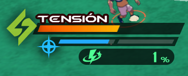
Las afinidades
Cada supertécnica tiene una afinidad ligada a ella. Cada afinidad es fuerte contra una y débil contra otra, en el caso de que en un duelo una afinidad supere a otra, los números aumentarán para la persona que gana en afinidad. Los duelos se separan en afinidad del jugador y afinidad de la técnica, las técnicas reales, tiros rematados sin técnica y técnicas neutras no tienen ese duelo. Hasta donde yo sé y he notado, no hay un efecto de Stab (Si un jugador de una afinidad usa un ataque de la misma afinidad, aumenta la potencia) viendo los números y la información de poder al tirar, y aunque la hubiera es leve, así que flexibilidad en los tipos o uso de ataques neutros es viable. Ten en cuenta la afinidad para saber cómo actuar ante ciertos enemigos.
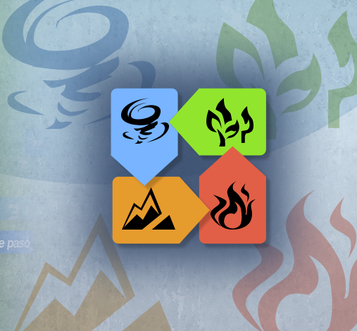
Técnicas reales
Las técnicas reales son unas minisupertécnicas que consumen muy poca tensión y son poco potentes. Últimamente se está viendo mucho juego con ellas para ahorrar tensión pero igualmente asegurar duelos así que no puedes ignorarlas.
Poder de las técnicas
Las supertécnicas tienen diferente poder, este poder se mide por medio de su coste en tensión. Este coste se puede revisar fácilmente en la tienda, donde las técnicas más poderosas tendrán 100 de consumo de tensión. Hay pocas de 100 de tensión que tengan características especiales y es por eso que es importante tener versatilidad con los tipos, seguramente uses jungla profunda en defensas de otros elementos por lo fuerte que es.
Los niveles de supertécnicas
Las supertécnicas pueden subir de nivel si pones varias veces la misma técnica en el panel de habilidades. Esto no aumenta tanto la potencia como se esperaría así que termina siendo más útil cubrir otras afinidades o gastar espacio para usar los overdrive, solo renta si no tienes otra cosa para la cual gastar ese slot que no sea mejorar una técnica.
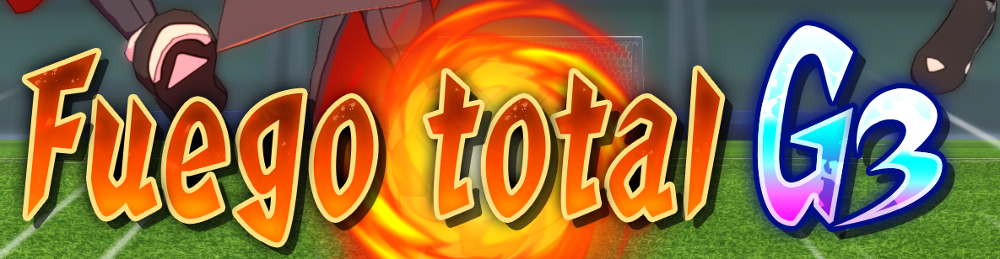
-2 Supertécnicas de tiro
Las supertécnicas de tiro son las técnicas con las cuales, oh sorpresa, tiras a puerta. Estas técnicas se pueden encadenar cuando el tiro va apuntado a un jugador tuyo en el área o toca a un compañero en caso de tiro largo para poder aumentar la potencia y cambiar las afinidades.
Estas pueden ser de tres tipos:
Tiros normales
Son los tiros regulares, simplemente llegas al área y tiras a puerta con ellos, no tienen características especiales.
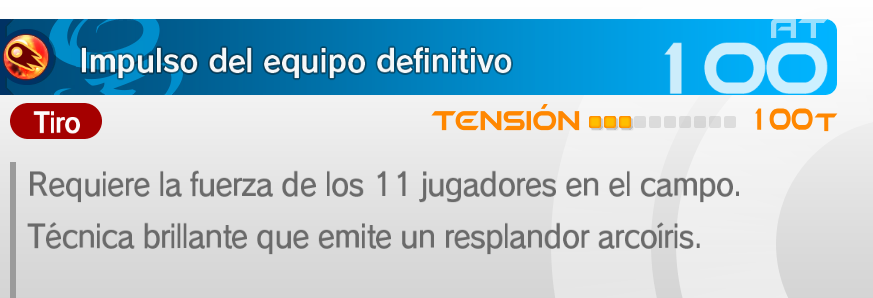
Tiros largos
Son los tipos de tiro más fuertes, ya que la capacidad de tirar desde cualquier lugar del campo con mínimas pérdidas de potencia permite abusar de las mejoras muy fácilmente. Hay estrategias que incluyen obtener la mejora de tiro de tensión, activar un despertar y simplemente destrozar la portería con un tiro largo, siempre debes tener algunos disponibles en tu equipo. Tienen un ligero tiempo de espera tras usarlos, pero es demasiado poco, siempre que tengas de nuevo las mejoras de turno lo tendrás disponible.
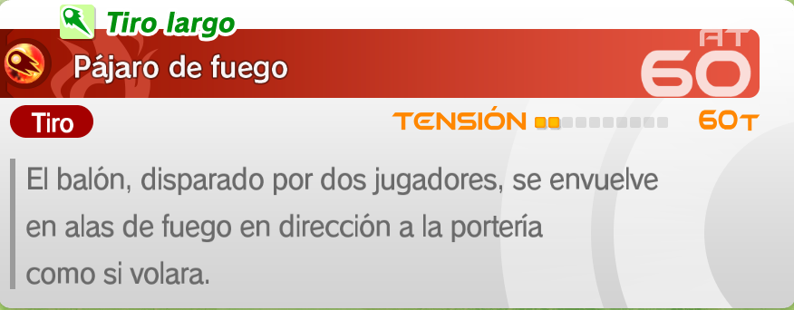
Tiros de contraataque
Son algo más de nicho, estos tiros pueden bloquear tiros rivales, pero tienen la particularidad de que si consigue reducir a 0 el poder del tiro, lo devolverá al rival. Puede causar momentos graciosos, pero no es particularmente útil.
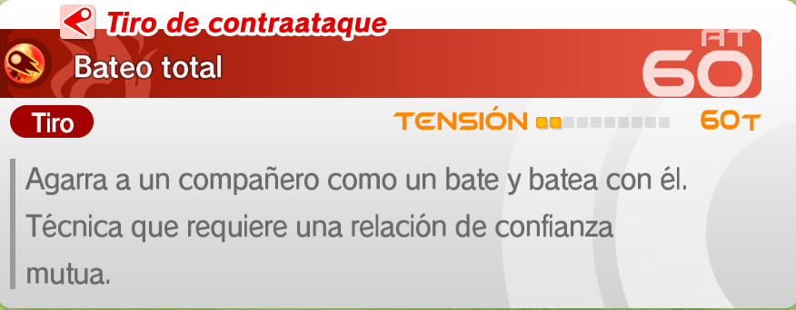
-3 Supertécnicas de regate
Las supertécnicas de regate son las técnicas que se usan en los duelos ofensivos. No hay ningún tipo, simplemente son más poderosas cuanto más PT consuman y ya.
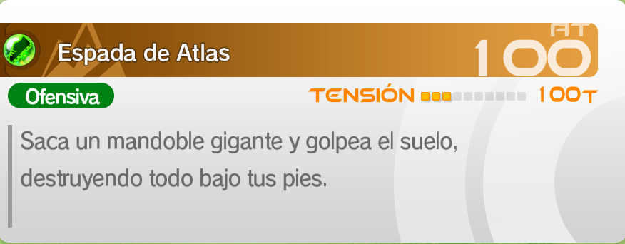
-4 Supertécnicas de defensa
Las supertécnicas de defensa son las técnicas que se usan en los duelos defensivos.
Hay de dos tipos:
Defensa normal
Son las técnicas regulares, simplemente sirven para los focos y ya.
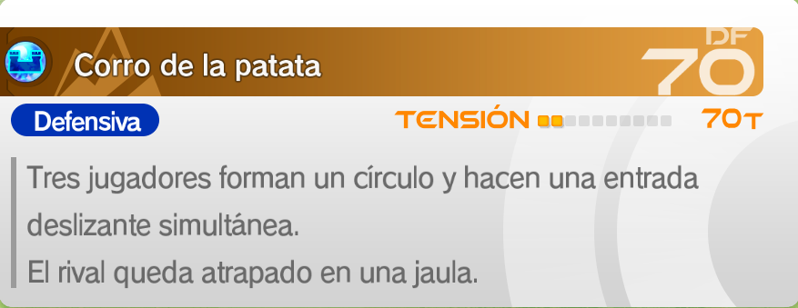
Defensa de bloqueo
Estas técnicas no solo se pueden usar para ganar en focos, también te permiten bloquear técnicas enemigas, acción en la cual se usa la defensa de muro para calcular y reducir o eliminar la potencia de un tiro enemigo.
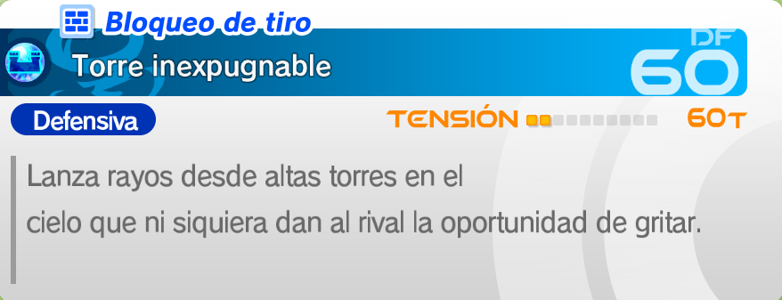
-5 Supertécnicas de parada
Estas son muy directas, las usa el portero cuando recibe un tiro y le añaden vida extra para bloquear el tiro, con lo cual puede evitar perder vida o parar tiros fuertes.
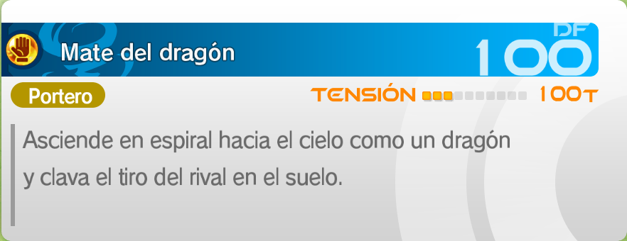
-6 Supertécnicas Overdrive (Metaráfagas)
Las supertécnicas Overdrive son un tipo de supertécnica más poderosas que las demás que se puede ejecutar cuando se cumplen los requisitos. Puedes consultar los requisitos en la parte de bonificaciones de equipo, también hay que tener cerca a los jugadores con las técnicas necesarias, si no no contará. Mucha atención a estas porque practicamente son meta.
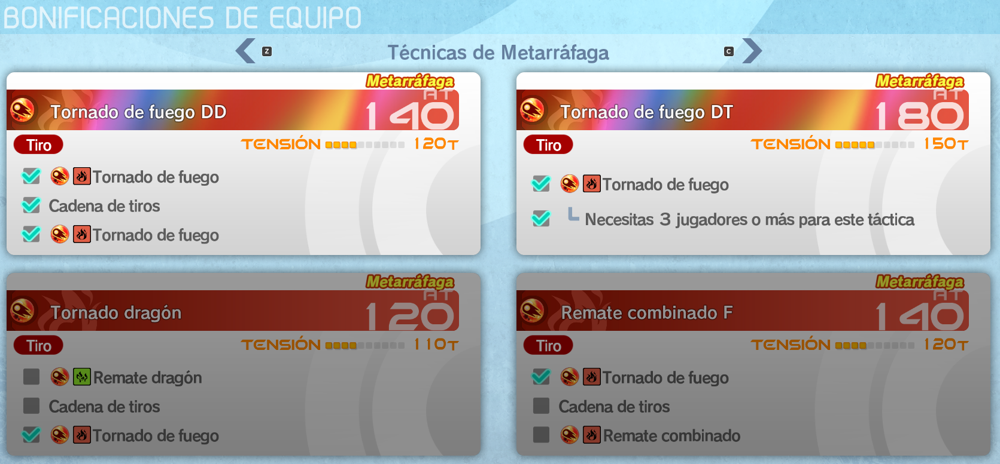
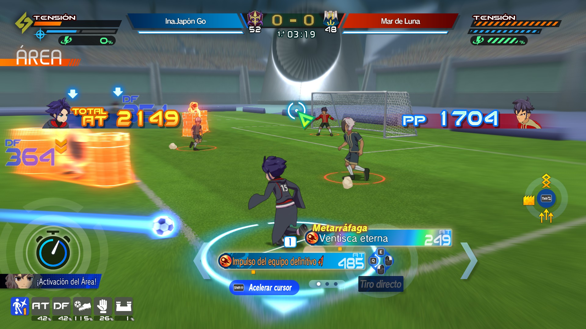
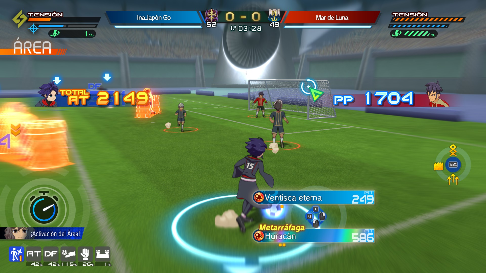
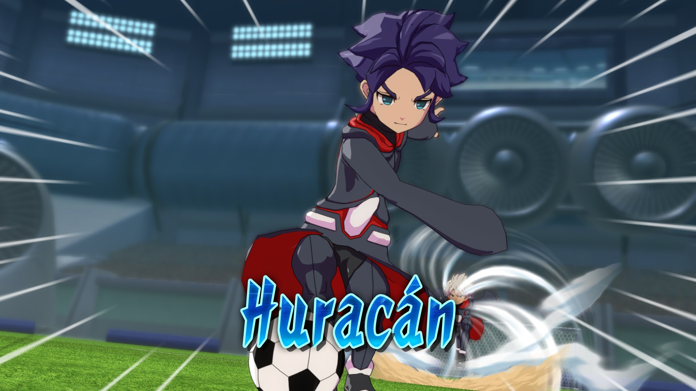
-7 Supertécnicas de hipertécnicas
Este es un punto sencillo, las hipertécnicas de los Espíritus guerreros (Keshin), Miximax y Tótems te otorgan su propia supertécnica mientras la hipertécnica esté activa.
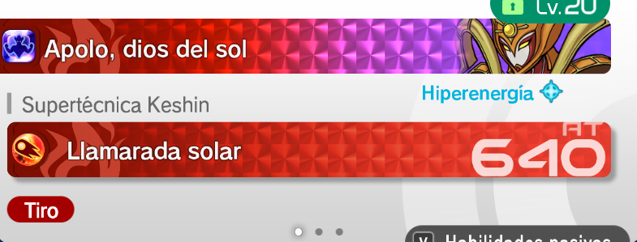